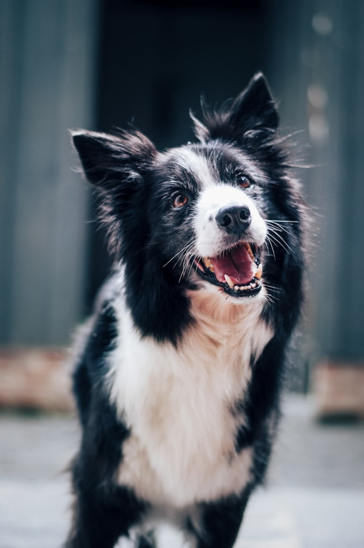

Finding Forever: Bella's Journey

When Bella first arrived at RescueHope, she wouldn't even lift her head from the corner of her kennel. Today, she's the queen of her household, a testament to what patience and love can do.
A Timid Beginning
Bella was found as a stray during a thunderstorm in late November. She was cold, underweight, and terrified of everything from loud noises to quick movements. Our veterinary team estimated she'd been on her own for at least several months, surviving on scraps and sheer instinct.

The transformation: From her first day in rescue to her celebration of 'Gotcha Day'.
The Perfect Match
The Miller family wasn't looking for a "perfect" dog; they were looking for a friend who needed them as much as they needed her. After several meet-and-greets at our shelter, the connection was undeniable. Bella, for the first time, wagged her tail at Sarah Miller, and that was the moment we all knew this was the start of something beautiful.
Want to change a life?
There are many more stories like Bella's waiting to be written. Browse our adoptable animals today and find your new best friend.
Adopt an Animal